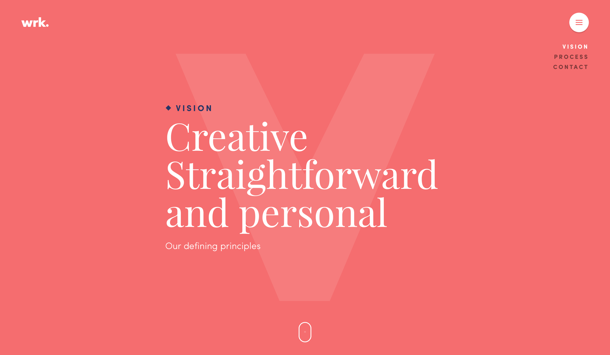

Kathleen Capiral is currently a student at Concordia University. She is in the program of Design and is pursuing the path of a web, UI/UX designer. Although she is studying hard at school, she also works at an art and design collaboration firm. Be aware that although this website is very soft and colorful, Kathleen is rather the opposite in personality and in what she wears.

waaark.com